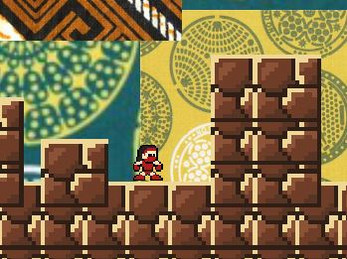

Discovering Africa
2D Platformer
Discovering Africa is an engaging 2D platformer developed during the 2022 Maliyo Games Game Jam, celebrating the rich cultural heritage of the African continent.
Built in Unity for Android devices, players embark on an educational adventure, navigating through beautifully illustrated levels inspired by diverse African landscapes and landmarks. The game combines precise platforming mechanics with cultural storytelling elements, challenging players to collect artifacts and learn about African history while avoiding obstacles. This passion project showcases mobile game optimization, responsive touch controls, and thoughtful integration of educational content within an entertaining gameplay framework.
Game Link